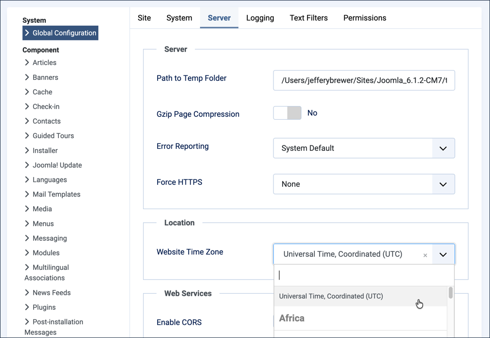
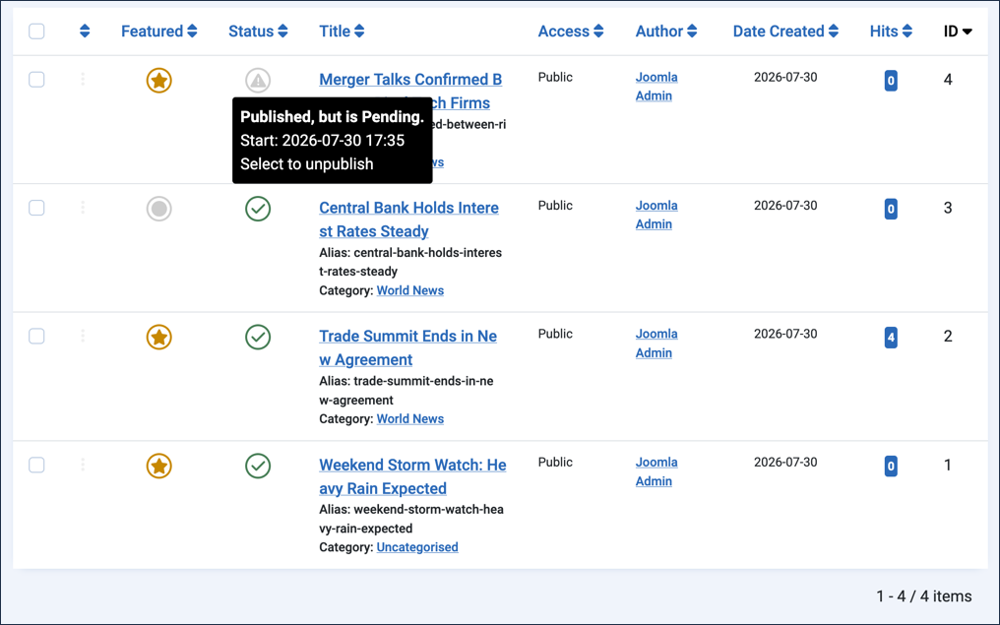

A key part of a Content Management System (CMS) is its ability to deliver content to selected users for selected periods. Joomla! does that with access levels and publishing start and finish dates.
Start and finish dates can be set for featured and unfeatured articles alike. For example, a new article could be featured for a set period, say 30 days, after which it would become an ordinary unfeatured article. It would disappear from featured-article layouts but still appear in other blog or single-article layouts.
Mostly, articles are published on the day they are created and remain so until unpublished, archived, or deleted.
Prerequisites
Setup
Set the Server Time Zone
- Log in to Joomla backend and navigate to the Home Dashboard.
- In the Administrator Menu, click System > Global Configuration.
- Click the Server tab.
- Under Location, note the current Website Time Zone value — you'll restore this at the end of the tutorial.
- Adjust Website Time Zone to your local time zone.

- Click Save & Close.
Add an Article to World News
- In the Administrator Menu, click Content > Articles.
- Click New. Result: A new-article form appears.
- Title: Merger Talks Confirmed Between Rival Tech Firms
- Category: World News
- Featured: Yes
- Save & Close
Steps
Verify the Setup
- View the site. Result: The homepage appears, with Merger Talks Confirmed Between Rival Tech Firms listed as a featured article.
- Click World News in the Main Menu. Result: The article appears in the blog, alongside the earlier World News stories.
- Return to the backend and click Content > Articles. Result: The Merger Talks Confirmed Between Rival Tech Firms article has a gold star icon, indicating it's a featured item, and a green check icon, indicating it's published.
Set the Publication Time
- Edit the article and click the Publishing tab.
- Enter a Start Publishing time a few minutes in the future.
- The date and time use ISO 8601 format, YYYY-MM-DD HH:MM:SS, e.g. 2026-04-16 14:13:27 represents 2:13 p.m. and 27 seconds on April 16, 2026.
- Save & Close. Result: The status icon in the article list changes. Note: Hover over the icon to read the popup message — the article is unpublished but will be published automatically at the start-publishing time you set.

- View the site before the start-publishing time you entered.
- Check the homepage and the World News blog page to verify that your article does not yet appear.
- When the start-publishing time has elapsed, recheck the homepage and blog page, refreshing if necessary. Result: Your article appears in both places.
- Return to the article list in the backend. Result: The now-published article appears with a green check status icon.

Control the Featured Item Time
- Edit the article and click the Publishing tab.
- Enter a Start Featured time a few minutes in the future.
- Enter a Finish Featured time a minute or two beyond the Start Featured time.

- Save & Close. Result: The featured icon in the article list changes. Note: Hover over the icon to read the popup message.

- View the site. Result: The article does not appear on the homepage as a featured item but still appears on the World News blog page.
- When the Start Featured time has elapsed, recheck the homepage (refreshing if necessary). Result: The article appears as a featured item.
- Return to the article list. Result: The now-featured article appears with a gold star Featured icon. Note: Hover over the icon to read the popup message.
- When the Finish Featured time has elapsed, view the site and refresh the homepage. Result: The article no longer appears as a featured item, but still appears in the World News blog.
- Return to the backend and inspect the Featured icon, hovering over it to view the popup message.
Set the Finish Publication Time
- Edit the article and click the Publishing tab.
- Enter a Finish Publication time a few minutes in the future.
- Save & Close
- Visit the site. Result: The article remains active on the World News blog page.
- When the finish-publishing time has elapsed, refresh the World News blog page. Result: The article is no longer available.
- Return to the backend and inspect the Status icon, hovering over it to view the popup message.

Reset the Server Time Zone
- In the Administrator Menu, click System > Global Configuration.
- Click the Server tab.
- Adjust Website Time Zone back to its original value (default is UTC).
- Save & Close
Concepts
These settings make it convenient to set the precise time an article is published, set the time and duration an article appears as a featured item, and automatically remove content at a specific date and time in the future — all helpful tools for controlling website content. Newsrooms use exactly this kind of scheduling for embargoed press releases and time-sensitive coverage that should be retired once it's no longer current.
The timed publication controls allow you to control when articles are available on your website. The Start Publishing and Finish Publishing settings control when an article appears on the website; if left blank, an article appears as soon as it's created.
If the article is featured (i.e. Featured is set to Yes in the article settings), the Start Featured and Finish Featured settings control when the article appears as a featured item.
Start and finish times are relative to the website's time zone setting, which may differ from your local time zone and may not adjust for daylight saving time.